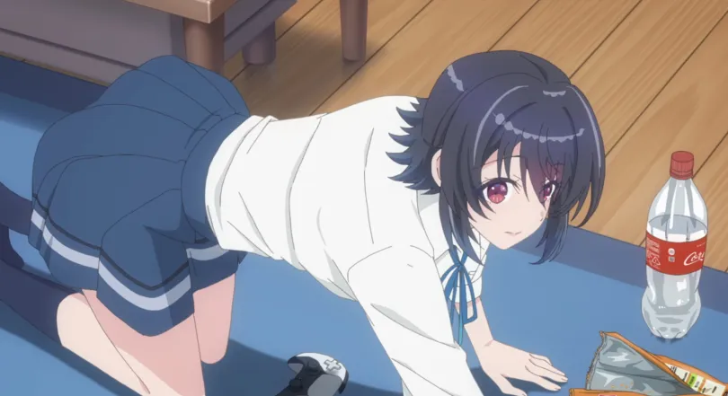
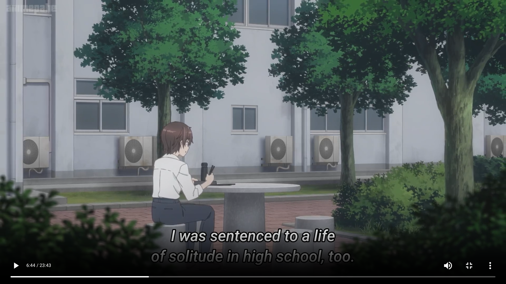

i made 2nd friend with the second prettiest girl in my class
1st ep
2nd ep
3rd ep
4th ep
5th ep
ABOUT ANIME
A quiet boy who doesn’t have many friends slowly becomes close to the “second prettiest girl” in his class. She is popular, cheerful, and kind, but she hides her real feelings from others. As they spend more time together, their friendship becomes special and starts turning into romance.
The story focuses on cute daily moments, trust, emotions, jealousy, and how two different people slowly understand each other.
ABOUT CHARACTER
this is :- maki maehara
Maehara Maki is a quiet and introverted high school boy who prefers spending time alone watching movies and playing games rather than socializing with others. At first, he does not have many friends and finds it difficult to express his feelings, but deep inside he is kind, honest, and caring. His life slowly changes when he becomes close to Umi Asanagi, the second prettiest girl in his class. Through their daily conversations and shared moments, he starts opening up emotionally and becomes more confident. Readers like Maki because he feels realistic and relatable, like an ordinary person learning how to trust and connect with someone special.
this is :- amami yuu
Amami Yuu is a cheerful, energetic, and highly social girl who easily becomes friends with everyone around her. She is known for her bright personality, cute appearance, and positive attitude, which makes her very popular at school. Even though she often acts playful and carefree, she genuinely cares about her friends and tries to support them emotionally. Yuu brings warmth and fun to the people around her, and her natural kindness makes her one of the most lovable characters in the story.
this is :- umi asanagi
Umi Asanagi is a beautiful, cheerful, and popular high school girl who is known as the “second prettiest girl” in her class. Although she appears energetic and confident around others, her true personality is more gentle, emotional, and caring when she is with people she trusts. She slowly becomes close to Maehara Maki, and their relationship grows through natural conversations, shared hobbies, and quiet everyday moments. Umi is loved by readers because she feels warm, realistic, and emotionally supportive rather than acting like a perfect or unrealistic heroine.


sweet closer of anime
in anime like Horimiya or The Angel Next Door Spoils Me Rotten, the relationship keeps getting warmer instead of ending with sadness or separation. The focus is on comforting moments, caring behavior, hand-holding, teasing, emotional support, and a satisfying romantic connection by the end.